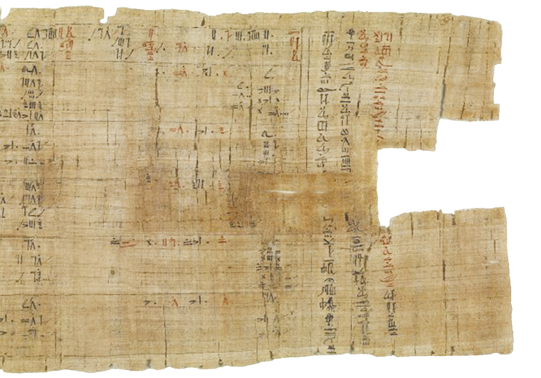
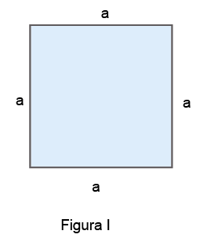
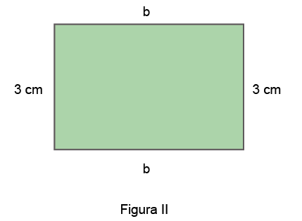
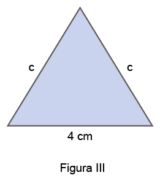
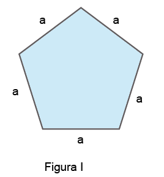
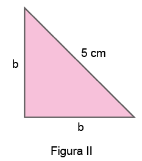
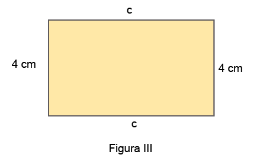

UNIDADE 3 - Monômios e polinômios
![Foto de página inteira da fachada do Museu Britânico, de Londres, Inglaterra.
De inspiração grega, a edificação neoclássica conta com uma fachada composta por colunas.
Na foto, vê-se seis colunas à frente e 8 mais ao fundo Doze degraus dão acesso à entrada principal.
Na parte de cima da fachada, dentro de um grande triângulo, a escultura de treze pessoas
representativas do mundo da arte. Na ponta do vértice um mastro com uma bandeira.
À frente um calçadão com 9 pessoas circulando.
Mais cinco pessoas na escada que dá acesso à entrada do Museu.](../../resources/images/8ANO_U3_image/M8A_8_ano_mat_P_54_museu_britanico.png)
57

Papiro de Rhind, cerca de 1550 a.C. Na foto, o detalhe do papiro mede 21,6 cm x 43 cm, o papiro inteiro mede 199,5 cm x 32 cm. Acervo Museu Britânico. Londres, Inglaterra.
O Papiro de Rhind encontra-se atualmente no Museu Britânico, em Londres. É um importante documento histórico, em que são apresentadas situações práticas da área administrativa e de construção. O texto contém 84 problemas relacionados a operações numéricas, prática de resoluções de problemas e formas geométricas.
O papiro foi adquirido pelo advogado escocês A. H. Rhind durante sua estada em Tebas, Egito, na década de 1850.
CONVERSE
- Observe a seguir um problema que se encontra no Papiro de Rhind:
Problema 24
“Calcule o valor de aha, sabendo que aha mais um sétimo de aha dá 19.”- O que representa “aha” nesta situação?
- Explique como podemos resolver esse problema. Em seguida, resolva-o.





